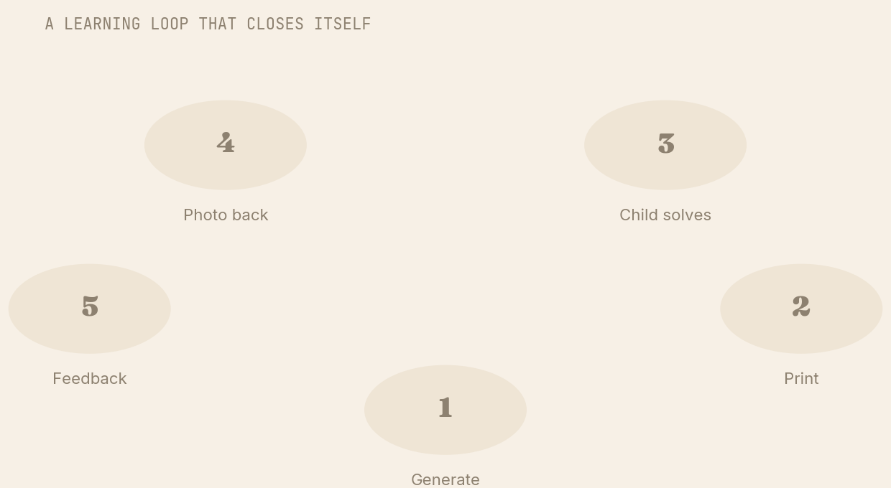
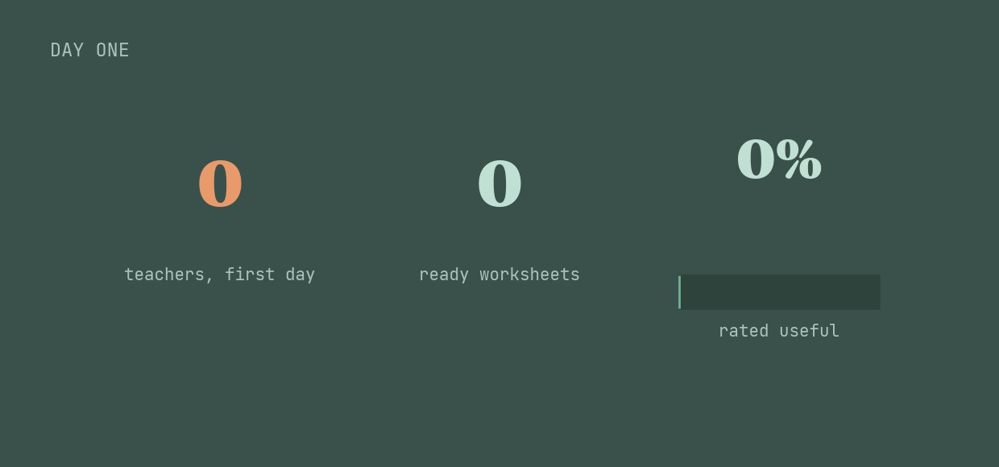

A teacher with forty children cannot mark forty worksheets every night — so in most classrooms, homework goes home and feedback never comes back. What if the whole circle could close on the one device everyone already has?
Homework only works if someone looks at it. But marking is the quiet, invisible labour that buries teachers — and in large, under-resourced classrooms it simply doesn't happen. The child does the work; no one ever tells them what they got right. The loop stays open.
So we asked a different question: what if Rumi didn't just set homework, but closed the loop on it? Rumi builds a print-ready worksheet matched to the chapter a teacher actually taught. The child completes it on paper. Then someone photographs the finished sheet and sends it back — and feedback comes in seconds, not next week.
It's early. But the first version is already in teachers' hands, and the signal is encouraging.
The point was never to generate homework. Anyone can do that. The point was to close the circle — so a child's effort actually gets seen.— The idea behind self-grading homework
Five steps, all on WhatsApp — no app, no scanner, no special device.

An early build, a real cohort — and a rating teachers don't give lightly.

75 worksheets across early grades, 349 teachers in the first day, 94% calling it useful. The marking burden hasn't been automated away yet — but a child photographing their finished sheet and getting an answer back, in seconds, on a borrowed phone, is the shape of something worth building all the way.
Early build · in teachers' hands